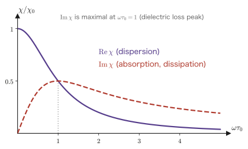

Chapter 1What Is Linear Response?
A physics experiment, boiled down, is “kicking a system and listening to the reply.” We apply an electric field to a sample and measure the current. We apply a magnetic field and measure the magnetization. We shine light on it and measure the reflectance. We fire neutrons at it and watch how they scatter. Each of these is a pair of “how we kick” and “the reply,” and the quantity that describes the relation between them is the response function.
If the kick is sufficiently gentle, the reply is proportional to how we kick. From this strikingly simple assumption of “proportionality” alone, a surprising amount can be said. That is linear response theory, and this chapter builds up its starting framework with a minimum of equations.
The conclusion we want to establish in this chapter comes down to the following single line. If we impose three physical postulates—linearity, time-translation invariance, and causality—the response necessarily takes the form
$$ \delta A(t) = \int_{-\infty}^{t} \chi(t-t')\, f(t')\, \dd t' $$of a convolution integral. The $\chi$ appearing here is the response function. From Chapter 2 on, we find this $\chi$ explicitly (Chapters 2–3), investigate its mathematical properties (Chapters 4–5), and extend it to quantum systems (Chapters 6–8).
- The meaning of the words “perturbation” and “response,” and the deviation $\delta A$ of a physical quantity from its equilibrium value
- What linearity (the principle of superposition) means, and the conditions under which it holds
- Time-translation invariance—why the response function depends on $t$ and $t'$ only through $t-t'$, not on each separately
- Causality—$\chi(t)=0$ ($t<0$), which gives rise to the Kramers–Kronig relations of Chapter 4
- That the form of the convolution integral follows necessarily from the three postulates
- That in Fourier space the convolution becomes a mere product, $\delta A(\omega)=\chi(\omega)f(\omega)$
- Examples of familiar response functions: the spring, the RC circuit, dielectric polarization (electric susceptibility), magnetization (magnetic susceptibility), and electrical conductivity
- The difference between “static response” and “dynamic response,” and the meaning of the $\omega\to0$ limit
1.1 Kick, and Listen to the Reply
1.1.1 Setup
First we fix our terminology. Suppose that the system initially rests in a state with no external force. This is called the equilibrium state. The value of a physical quantity $A$ in this state is written $\braket{A}_0$.
Now we apply a time-dependent external force (a perturbation) $f(t)$. Then the value of $A$ deviates from its equilibrium value. We write this deviation as
$$ \begin{equation} \delta A(t) \equiv \braket{A(t)} - \braket{A}_0 \label{eq:1-deltaA} \end{equation} $$Linear response theory is the theory that investigates the relation between $f(t)$ and $\delta A(t)$.
| System | External force $f$ (how we kick) | Response $\delta A$ (the reply) | Response function |
|---|---|---|---|
| Point mass attached to a spring | force $F(t)$ | displacement $x(t)$ | mechanical susceptibility |
| Dielectric | electric field $E(t)$ | polarization $P(t)$ | electric susceptibility $\chi_e$ |
| Magnetic material | magnetic field $H(t)$ | magnetization $M(t)$ | magnetic susceptibility $\chi_m$ |
| Metal | electric field $E(t)$ | current density $j(t)$ | electrical conductivity $\sigma$ |
| Electron gas | external potential $\phi_{\text{ext}}$ | density change $\delta\rho$ | density response function $\chi_{\rho\rho}$ |
| RC circuit | voltage $V(t)$ | current $I(t)$ | admittance $Y$ |
Why look at the “deviation”?
The reason we bother to subtract the equilibrium value in Eq. \eqref{eq:1-deltaA} is not merely convenience. The deviation (the response) can be written using only information about the equilibrium state (correlation functions), without directly solving the nonequilibrium time evolution.
For example, obtaining exactly the total energy of the electron gas in a metal is still an unsolved hard problem. Yet “how much current flows when an electric field is applied” can be computed as long as the properties of the equilibrium state are known. This is the practical power of linear response theory. The Kubo formula of Chapter 7 is precisely this claim expressed in equations.
1.1.2 What does it mean to kick “gently”?
Linear response holds when the external force is “sufficiently weak.” Stated quantitatively, this condition means that the energy the external force gives to the system is much smaller than the characteristic energy scale of the system.
Example: Applying an electric field to a metal
The energy an electron gains while traveling a mean free path $\ell$ in an electric field $E$ is $eE\ell$. The characteristic energy of a metal is the Fermi energy $\varepsilon_F \sim 5\ \mathrm{eV}$. Taking $\ell\sim 10\ \mathrm{nm}$, the condition for linear response to hold is
$$ eE\ell \ll \varepsilon_F \quad\Longrightarrow\quad E \ll \frac{5\ \mathrm{eV}}{e\times 10\ \mathrm{nm}} = 5\times10^8\ \mathrm{V/m} $$The electric fields handled in the laboratory are at most about $10^6\ \mathrm{V/m}$, so the condition is amply satisfied. This is why Ohm's law $j=\sigma E$ holds.
Conversely, if a strong optical field of order $10^{7\text{–}8}\ \mathrm{V/m}$ is applied with a pulsed laser, deviations from linear response become observable, and nonlinear optical effects such as second-harmonic generation appear (beyond $10^{10}\ \mathrm{V/m}$, ionization begins and we enter the strong-field regime, in which perturbation theory itself breaks down).
1.2 The Three Postulates
The form of the response function is fixed by the following three physical postulates.
Postulate 1: Linearity (the principle of superposition)
Let $\delta A_1(t)$ and $\delta A_2(t)$ be the responses to two external forces $f_1(t)$ and $f_2(t)$, respectively. Then the response to the external force $af_1(t)+bf_2(t)$ is $a\,\delta A_1(t) + b\,\delta A_2(t)$.
Postulate 2: Time-translation invariance
The properties of the system itself do not depend on time (an experiment done tomorrow gives the same result). Therefore, if we shift the external force by a time $t_0$, the response is shifted by the same amount: if $f(t)\to f(t-t_0)$, then $\delta A(t)\to\delta A(t-t_0)$.
Postulate 3: Causality
An effect does not occur before its cause. The response $\delta A(t)$ at time $t$ depends only on the external force $f(t')$ at that time or earlier ($t'\le t$).
Physical Meaning: The weight of the three postulates
These three are entirely different in character.
- Linearity is an approximation. It always breaks down if the external force is made strong enough. This book is a theory within the range of this approximation.
- Time-translation invariance is a setting: the system is assumed to be stationary. It does not hold when the system itself changes in time (for example, when we measure a sample while heating it).
- Causality is a physical law. It is neither an approximation nor a setting, and it must never be violated. As we will see in Chapter 4, this postulate alone yields the Kramers–Kronig relations, a strong constraint that can be verified experimentally.
Later, when some argument about the upper half-plane of the complex plane comes up, you may regard it as a rephrasing of causality. Nine-tenths of the reason that complex analysis is needed in linear response theory is causality.
1.3 Derivation of the Convolution Integral
Derivation: From the three postulates to the convolution integral
Step 1: Decomposing the external force into a superposition of pulses. Using the delta function, an arbitrary external force $f(t)$ can be written as
$$ f(t) = \int_{-\infty}^{\infty} f(t')\,\delta(t-t')\,\dd t' $$This can be read as follows: “$f(t)$ is the sum, over all times, of the operation of delivering an instantaneous pulse of strength $f(t')\dd t'$ at time $t'$.”
Step 2: Defining the response to a unit pulse. Let $\chi(t)$ denote the response when a pulse $\delta(t)$ of unit strength is delivered at time $t'=0$. This is the response function (the impulse response, or the retarded Green's function):
Step 3: Using time-translation invariance. By Postulate 2, the response to the pulse $\delta(t-t')$ delivered at time $t'$ is $\chi(t-t')$. What matters here is that it depends not on $t$ and $t'$ separately, but only on their difference.
Step 4: Adding up with linearity. By Postulate 1, the responses to the individual pulses may simply be superposed. The response to the pulse of strength $f(t')\dd t'$ is $f(t')\chi(t-t')\dd t'$, so
$$ \begin{equation} \delta A(t) = \int_{-\infty}^{\infty} \chi(t-t')\, f(t')\, \dd t' \label{eq:1-convolution-full} \end{equation} $$Step 5: Cutting off the range of integration with causality. By Postulate 3, an external force with $t' > t$ must not contribute to $\delta A(t)$. This is equivalent to requiring
Then the integral in Eq. \eqref{eq:1-convolution-full} is automatically restricted to $t'\le t$, and we obtain
In the last equality we made the substitution $\tau = t-t'$. ∎
What This Equation Says
The second form of Eq. \eqref{eq:1-convolution},
$$ \delta A(t) = \int_{0}^{\infty} \chi(\tau)\, f(t-\tau)\, \dd\tau $$is easiest to understand when read as follows: “The present response $\delta A(t)$ is the sum of the external force $f(t-\tau)$ from a time $\tau$ in the past, weighted by $\chi(\tau)$.”
In other words, $\chi(\tau)$ expresses the memory of the system. A system whose $\chi(\tau)$ decays quickly with $\tau$ has a “poor memory” and returns to equilibrium immediately once the external force is switched off. A system that decays slowly “drags on.” When we actually find $\chi(\tau)$ of the damped oscillator (mass $m$, friction coefficient $\gamma$) in Chapter 2, a damping factor $\ee^{-\gamma\tau/(2m)}$ appears. The smaller the friction coefficient $\gamma$, the longer the memory.
Notation Note: $\chi$, $G$, or $\phi$?
The name and the symbol of this function vary from field to field.
- Condensed matter physics: response function, susceptibility, $\chi$
- Mathematics and the theory of differential equations: Green's function, $G$
- Control engineering and signal processing: impulse response, $h$
- Fetter–Walecka: $D^R$, $\chi^R$ as retarded correlation functions
In this book we mainly use $\chi(t)$ or $G(t)$ in the time domain and $\chi(\omega)$ in the frequency domain, and we write the retarded response function of a quantum system with a superscript $R$, as $\chi^R$. In substance, they are all the same thing.
1.4 Moving to Fourier Space
Convolution integrals are awkward to handle. After a Fourier transform, however, they become mere multiplication. This is why linear response theory uses the frequency representation almost exclusively.
The Fourier transform convention (used throughout this book)
$$ \begin{equation} g(\omega) = \int_{-\infty}^{\infty} g(t)\, \ee^{\ii\omega t}\, \dd t, \qquad g(t) = \frac{1}{2\pi}\int_{-\infty}^{\infty} g(\omega)\, \ee^{-\ii\omega t}\, \dd\omega \label{eq:1-fourier} \end{equation} $$The choice of sign differs from author to author, but this book follows Fetter–Walecka and uses $\ee^{+\ii\omega t}$ when passing from time to frequency. With this convention, the external force $f(t)=f_0\ee^{-\ii\omega t}$ is a monochromatic force of frequency $\omega$.
Derivation: The convolution theorem
We Fourier-transform both sides of Eq. \eqref{eq:1-convolution-full}.
$$ \delta A(\omega) = \int_{-\infty}^{\infty}\dd t\, \ee^{\ii\omega t} \int_{-\infty}^{\infty}\dd t'\, \chi(t-t')f(t') $$Now we change variables to $\tau = t - t'$. Replacing the integral over $t$ by an integral over $\tau$, we have $t = \tau + t'$ and $\dd t = \dd\tau$, so
$$ \delta A(\omega) = \int\dd\tau\int\dd t'\, \ee^{\ii\omega(\tau+t')}\chi(\tau)f(t') = \underbrace{\int\dd\tau\, \ee^{\ii\omega\tau}\chi(\tau)}_{\chi(\omega)} \times \underbrace{\int\dd t'\, \ee^{\ii\omega t'}f(t')}_{f(\omega)} $$The double integral has separated into a product of two independent integrals. Therefore
∎
Using causality, Eq. \eqref{eq:1-causality}, the lower limit of integration in the definition of $\chi(\omega)$ becomes $0$:
Physical Meaning: All of Chapter 4 is buried in this equation
Look closely at Eq. \eqref{eq:1-chi-omega}. The range of integration runs from $0$ to $\infty$, and the integrand contains $\ee^{\ii\omega\tau}$.
Now regard $\omega$ as a complex number and suppose that its imaginary part is positive ($\mathrm{Im}\,\omega > 0$). Then
$$ \abs{\ee^{\ii\omega\tau}} = \ee^{-(\mathrm{Im}\,\omega)\tau} \xrightarrow{\ \tau\to+\infty\ } 0 $$and the integral converges even better. In other words, $\chi(\omega)$ is analytic in the upper half-plane of the complex $\omega$ plane.
If causality did not hold and the integral started at $-\infty$, this argument would fail. The correspondence causality $\Longleftrightarrow$ analyticity in the upper half-plane can be read off from an equation just one line long. It is in Chapter 4 that the Kramers–Kronig relations emerge from this correspondence, and in Chapter 5 that complex analysis becomes necessary.
1.5 Familiar Response Functions
1.5.1 The simplest example: relaxation
Sidebar: What is the step function $\theta(t)$?
The symbol $\theta(t)$ appears in the next example. Along with the delta function, it is a tool we use throughout this book, so let us pin down what it really is here. It is nothing difficult. $\theta$ is a “switch.”
1. Definition.
$$ \theta(t) = \begin{cases} 1 & (t>0)\\[2pt] 0 & (t<0) \end{cases} $$This is a function that jumps instantaneously from $0$ to $1$ at $t=0$. There are various conventions for the value exactly at $t=0$ (it is often agreed to set $\theta(0)=1/2$, out of respect for symmetry), and in this book we do not worry about it. We always use $\theta$ inside an integral, so the value at a single point does not affect the result.
2. Why it appears here—multiplying by it is all it takes to impose causality. The operation of multiplying the response function $\chi(t)$ by $\theta(t)$ is precisely the postulate that
there is no response for $t<0$ = the effect does not appear before the cause
The physical content of what we called “causality” in Section 1.4 is concentrated entirely in the single operation of multiplying by one factor of $\theta$. Conversely, a $\chi(t)$ without $\theta$ describes a “system that starts moving before it is kicked.”
3. In practice it only means that “the lower limit of the integral becomes $0$.” When the integrand contains $\theta(t)$, the whole part with $t<0$ drops out, so
$$ \int_{-\infty}^{\infty}\dd t\;\theta(t)\,g(t) \;=\; \int_{0}^{\infty}\dd t\;g(t) $$The reason the lower limit is suddenly $0$ in the solution of the next example is that we used this. In most cases, the role that $\theta$ plays in a calculation comes down to this.
4. Relation to the delta function—the switch and the hammer. The two are connected by differentiation.
$$ \frac{\dd\theta(t)}{\dd t} = \delta(t) $$Whereas $\theta$ represents “switching on at $t=0$ and then continuing to apply a constant force,” $\delta$ represents “kicking only for an instant at $t=0$.” Since the forces are related in this way, the responses are connected by the same relation:
$$ (\text{impulse response}) = \frac{\dd}{\dd t}(\text{step response}) $$In experiments, applying a step-like force is much easier than applying an instantaneous impulsive force accurately. In practice, therefore, one measures the step response and differentiates it to obtain the impulse response, that is, the response function $\chi(t)$. This is the sense in which we called $\chi(t)$ the “impulse response” in Section 1.3.
5. Where it matters later. The Fourier transform of $\theta(t)$ has the form $\ii/(\omega+\ii\eta)$, and a small imaginary part $+\ii\eta$ appears in the denominator. This $+\ii\eta$ is precisely how causality looks in $\omega$-space. The Kramers–Kronig relations of Chapter 4, the closing of the contour in the upper half-plane of the complex plane in Chapter 5, and the $+\ii\eta$ that appears in Chapters 7 and 8 all flow from this single point. The derivation, and the relation to the sign function $\mathrm{sgn}(t)$, are collected in Appendix A, Section A.3.
Example 1.1: A system with exponential relaxation
Consider a system in which, after the external force is switched off, the deviation relaxes exponentially with time constant $\tau_0$. Let the response function be
$$ \chi(t) = \frac{\chi_0}{\tau_0}\ee^{-t/\tau_0}\,\theta(t) $$(here $\theta$ is the step function, and it expresses causality). Find $\chi(\omega)$.
Solution. We substitute into Eq. \eqref{eq:1-chi-omega}.
$$ \chi(\omega) = \frac{\chi_0}{\tau_0}\int_0^\infty \ee^{-t/\tau_0}\ee^{\ii\omega t}\,\dd t = \frac{\chi_0}{\tau_0}\int_0^\infty \ee^{-(1/\tau_0 - \ii\omega)t}\,\dd t $$The integral of an exponential function is easy; since $\mathrm{Re}(1/\tau_0-\ii\omega) = 1/\tau_0 > 0$, it converges, and
$$ = \frac{\chi_0}{\tau_0}\cdot\frac{1}{1/\tau_0 - \ii\omega} = \frac{\chi_0}{1 - \ii\omega\tau_0} $$This is the formula for Debye relaxation, the most basic form describing the frequency response of a dielectric. ∎
Separating the real and imaginary parts, we obtain (Figure 1.1)
$$ \mathrm{Re}\,\chi(\omega) = \frac{\chi_0}{1+\omega^2\tau_0^2}, \qquad \mathrm{Im}\,\chi(\omega) = \frac{\chi_0\,\omega\tau_0}{1+\omega^2\tau_0^2} $$$\mathrm{Im}\,\chi$ has a peak at $\omega\tau_0=1$. This is the dielectric loss peak. For water at room temperature, $\tau_0\approx 8\ \mathrm{ps}$, and the peak lies at about $20\ \mathrm{GHz}$. The $2.45\ \mathrm{GHz}$ used by microwave ovens is not at this peak but on its low-frequency tail. This is because, right at the peak, the absorption is so strong that the electromagnetic wave penetrates only to the surface of the food and cannot heat the interior (it is also relevant that this frequency has been allocated to the industrial, scientific, and medical (ISM) band).
Let us focus on the location of the pole. $\chi(\omega)$ diverges at $\omega = -\ii/\tau_0$. This lies in the lower half-plane of the complex plane. The statement “analytic in the upper half-plane” made in Section 1.4 indeed holds.

1.5.2 Static response — the limit $\omega\to0$
When the external force is a constant $f_0$ independent of time, the response is also a constant. Setting $f(t-\tau)=f_0$ in Eq. \eqref{eq:1-convolution}, we have
$$ \delta A = f_0 \int_0^\infty \chi(\tau)\,\dd\tau = f_0\,\chi(\omega=0) $$That is, $\chi(\omega=0)$ is the static susceptibility. In terms of the examples in Table 1.1, the electric susceptibility for a static electric field, the magnetic susceptibility for a static magnetic field, and the DC electrical conductivity correspond to it. In contrast, the response to an external force of frequency $\omega\neq0$ is called the dynamic response. The static response is its $\omega\to0$ limit.
Physical Meaning: The static response is a thermodynamic quantity
The static susceptibility is in fact a thermodynamic quantity. When the external force $f$ is coupled to the physical quantity $A$ (that is, the energy (Hamiltonian) $H$ of the system changes into the form $H \to H - fA$), we can write, using the free energy $F(f)$,
$$ \braket{A} = -\frac{\partial F}{\partial f}, \qquad \chi(0) = \frac{\partial\braket{A}}{\partial f} = -\frac{\partial^2 F}{\partial f^2} $$That is, the static susceptibility is the second derivative of the free energy (with a minus sign attached).
When a second derivative diverges, the system undergoes a phase transition. This is why the magnetic susceptibility diverges at a ferromagnetic transition point and the dielectric constant diverges at a ferroelectric transition point. The plasma oscillation we will see in Chapter 11 also appears as the condition $\epsilon(\qq,\omega)=0$, a “condition for the response to diverge.” You may take the divergence of a response function as a signal that the system is about to do something.
1.6 Why Is It Interesting Even Though It Is Linear?
When we hear “linear,” it sounds like the simplest and most boring case. Why, then, does such a large theoretical framework get built on it? There are three reasons.
Reason 1: Almost every measurement is a linear response
Most of the quantities we measure in experiments are linear response functions themselves. Electrical conductivity, the dielectric function, magnetic susceptibility, elastic constants, optical absorption spectra, neutron scattering cross sections—all of them are. Therefore linear response theory is the common language that connects theory and experiment.
Reason 2: The “poles” of the response function tell us about collective excitations
When we look at the response function $\chi(\omega)$ on the complex $\omega$ plane, it has poles (points where it diverges). The positions of these poles give the energy and the lifetime of the natural oscillations of the system.
For the damped oscillator of Chapter 2, the poles are at $\omega = \pm\omega_1 - \ii\gamma/(2m)$ ($\omega_1$ is the natural frequency shifted by the damping; it is defined in Chapter 2), where the real part is the frequency and the imaginary part is the damping rate. The same structure holds unchanged for quantum systems, and appears in the Lehmann representation of Chapter 8 in the form “position of the pole = excitation energy.” Both plasmons (Chapter 11) and zero sound (Chapter 11) are understood as poles of the response function.
If we kick the system and listen to the reply, we can tell what the system wants to do even when we do not kick it—this is the most beautiful feature of linear response theory.
Reason 3: Fluctuation and dissipation are linked
The fluctuation–dissipation theorem, which we derive in Chapter 8, asserts that the “response to an external force (dissipation)” and the “spontaneous fluctuations in equilibrium” can be written in terms of the same function.
As a familiar example, when we apply a voltage to a resistor, a current flows and heat is generated (dissipation). The same resistor also produces thermal noise (Johnson noise) even when no voltage is applied (fluctuation). These two look unrelated, yet they are tied together by the same $R$ in $\braket{V^2}=4k_BTR\Delta f$. The fluctuation–dissipation theorem is the general form of this relation, which Nyquist found in 1928.
1.7 Summary and Exercises
1.7.1 Summary
- Linear response is the framework of “kicking gently and listening to the reply.” We study the deviation $\delta A(t)$ of a physical quantity in response to an external force $f(t)$.
- The three postulates: linearity (an approximation), time-translation invariance (a setting), and causality (a law). Keep in mind that they differ in character.
- From these three, the response necessarily takes the form of a convolution integral $\delta A(t)=\int_0^\infty\chi(\tau)f(t-\tau)\dd\tau$. Here $\chi(\tau)$ represents the “memory of the system.”
- In Fourier space the convolution becomes a product: $\delta A(\omega)=\chi(\omega)f(\omega)$. This is why linear response theory is spoken of in the frequency representation.
- Causality is equivalent to $\chi(\tau)=0\ (\tau<0)$, which means that $\chi(\omega)$ is analytic in the upper half-plane of the complex plane. This is the starting point of Chapters 4 and 5.
- $\chi(\omega=0)$ is the static susceptibility, equal to the second derivative of the free energy, $-\partial^2 F/\partial f^2$. Its divergence is a phase transition.
- The poles of $\chi(\omega)$ give the collective excitations, $\mathrm{Im}\,\chi$ gives the energy dissipation, and the relation to the equilibrium fluctuations gives the fluctuation–dissipation theorem. All the later chapters are developments of these three points.
1.7.2 Exercises
Exercise 1.1: Response to a step-like force
At time $t=0$ the external force is raised from $0$ to $f_0$ in a step-like manner ($f(t)=f_0\theta(t)$).
(1) For a general $\chi(\tau)$, write $\delta A(t)$ in the form of an integral.
(2) For Debye relaxation, $\chi(\tau)=(\chi_0/\tau_0)\ee^{-\tau/\tau_0}\theta(\tau)$, carry out the integral and show that $\delta A(t)=\chi_0 f_0(1-\ee^{-t/\tau_0})$.
(3) Verify that the static response $\chi_0 f_0$ is reached as $t\to\infty$.
Hint: (1) $\delta A(t)=f_0\int_0^t\chi(\tau)\dd\tau$.
Exercise 1.2: Symmetry of the real and imaginary parts of a response function
Using the fact that $\chi(\tau)$ is a real function (a real response is returned to a real external force), show that
$$ \chi(-\omega) = \chi(\omega)^* $$holds. Then derive from this that $\mathrm{Re}\,\chi(\omega)$ is an even function of $\omega$ and $\mathrm{Im}\,\chi(\omega)$ is an odd function.
Hint: Take the complex conjugate of Eq. \eqref{eq:1-chi-omega}. We use this property in Chapter 4 when we rewrite the Kramers–Kronig relations as an integral over “positive $\omega$ only.”
Exercise 1.3: Response function of an RC circuit
A voltage $V(t)$ is applied to a series circuit of a resistance $R$ and a capacitor $C$. The current $I(t)$ is the response.
(1) Differentiate the circuit equation $RI + \frac{1}{C}\int I\,\dd t = V$ to obtain a differential equation for $I$.
(2) Let $V(t)=V_0\ee^{-\ii\omega t}$ and find the admittance $Y(\omega)=I(\omega)/V(\omega)$.
(3) Find the position of the pole of $Y(\omega)$ on the complex plane and verify that it is not in the upper half-plane.
Hint: (2) $Y(\omega)=\dfrac{-\ii\omega C}{1-\ii\omega RC}$. (3) The pole is at $\omega=-\ii/RC$, in the lower half-plane. This is consistent with causality.
Exercise 1.4: Estimating where linearity breaks down
The electric dipole moment of a water molecule is $p\approx 6.2\times10^{-30}\ \mathrm{C\,m}$, and the thermal energy at room temperature is $k_BT\approx 4.1\times10^{-21}\ \mathrm{J}$.
(1) The energy gained by a dipole in an electric field $E$ is $pE$. From the condition for linear response to hold, $pE\ll k_BT$, estimate the upper limit of $E$.
(2) Compare the value you obtained with the dielectric breakdown field of water ($\sim10^7\ \mathrm{V/m}$).
Hint: (1) $E \ll 6.6\times10^8\ \mathrm{V/m}$. For laboratory electric fields, linear response is a sufficiently good approximation.
Exercise 1.5: What happens if causality is violated
Consider, hypothetically, the “causality-violating” response function $\chi(\tau)=\dfrac{\chi_0}{2\tau_0}\,\ee^{-\abs{\tau}/\tau_0}$ (nonzero even for $\tau<0$).
(1) Calculate $\chi(\omega)$.
(2) Find the positions of the poles of $\chi(\omega)$ and verify that there is also a pole in the upper half-plane.
(3) Explain why, if we send a pulse into this system at $t=0$, a response appears at $t<0$.
Hint: (1) $\chi(\omega)=\dfrac{\chi_0}{1+\omega^2\tau_0^2}$. The poles are at $\omega=\pm\ii/\tau_0$, and one of them lies in the upper half-plane. As we will see in Chapter 4, if there is a pole in the upper half-plane, the Kramers–Kronig relations fail.
References
- A. L. Fetter and J. D. Walecka, Quantum Theory of Many-Particle Systems, McGraw-Hill, 1971; Japanese translation by Takeo Matsubara and Katsuhiko Fujii, Taryūshi-kei no Ryōshi-ron: Riron-hen [Quantum Theory of Many-Particle Systems: Theory Volume], McGraw-Hill (in Japanese), Section 13, “General theory of linear response to external perturbations.”
- R. Kubo, "Statistical-Mechanical Theory of Irreversible Processes I", J. Phys. Soc. Jpn. 12, 570 (1957).
- H. Nyquist, "Thermal Agitation of Electric Charge in Conductors", Phys. Rev. 32, 110 (1928). The prototype of the fluctuation–dissipation theorem.
- H. Bruus, K. Flensberg, Many-Body Quantum Theory in Condensed Matter Physics, Oxford University Press (2004), Chapter 6.